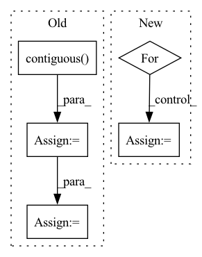

Pattern ID :32295

Before Change
valid_pixels, valid_coords, train_cam_tf, sample_ray_num, coarse_sample_pnum, 200, 200, train_focal, near_t, far_t
)
coarse_cams = coarse_samples[:, -1, :-3].contiguous()
gt_rgb = coarse_samples[:, -1, -3:].contiguous()
coarse_samples = coarse_samples[:, :-1, :].contiguous()
coarse_rgbo = coarse_net.forward(coarse_samples)
coarse_rendered, normed_weights = NeRF.render(coarse_rgbo, coarse_lengths, coarse_samples[:, :, 3:6].norm(dim = -1))
_, fine_lengths = inverseSample(normed_weights, coarse_cams, coarse_lengths, fine_sample_pnum, near_t, far_t)
fine_samples, fine_lengths = NeRF.coarseFineMerge(coarse_cams, coarse_lengths, fine_lengths) // (ray_num, 192, 6)
// 此处存在逻辑问题，需要第二次sort，并且RGB需要整理出来
fine_rgbo = fine_net.forward(fine_samples)
fine_rendered, _ = NeRF.render(fine_rgbo, fine_lengths, fine_samples[:, :, 3:6].norm(dim = -1))
opt.zero_grad()
loss:torch.Tensor = loss_func(coarse_rendered, gt_rgb) + loss_func(fine_rendered, gt_rgb)
train_timer.toc()
loss.backward()
After Change
train_result = render_image(fine_net, train_cam_tf[0], 200, test_focal, near_t, far_t, fine_sample_pnum)
test_results = []
test_loss = torch.zeros(1).cuda()
for i in range(4):
test_result = render_image(fine_net, test_cam_tf[i * 10], 200, test_focal, near_t, far_t, fine_sample_pnum)
test_results.append(test_result)
test_loss += loss_func(test_result, testset[i * 10].cuda())
render_timer.toc()
In pattern: SUPERPATTERN
Frequency: 3
Non-data size: 5
Instances
Fragment ID: 94449392
Project Name: enigmatisms/nerf
Commit Name: 5bf2199afe3d4eff27be923b0e6d62a3118af597
Time: 2022-04-13
Author: 984041003@qq.com
File Name: train.py
M Class Name: AnonimousClass
N Class Name: AnonimousClass
M Method Name: main(0)
N Method Name: main(0)
M Parent Class:
N Parent Class:
M File Name: train.py
N File Name: train.py
M Start Line: 66
M End Line: 188
N Start Line: 73
N End Line: 196
'>
Before Change
valid_pixels, valid_coords, train_cam_tf, sample_ray_num, coarse_sample_pnum, 200, 200, train_focal, near_t, far_t
)
coarse_cams = coarse_samples[:, -1, :-3].contiguous()
gt_rgb = coarse_samples[:, -1, -3:].contiguous()
coarse_samples = coarse_samples[:, :-1, :].contiguous()
coarse_rgbo = coarse_net.forward(coarse_samples)
coarse_rendered, normed_weights = NeRF.render(coarse_rgbo, coarse_lengths, coarse_samples[:, :, 3:6].norm(dim = -1))
_, fine_lengths = inverseSample(normed_weights, coarse_cams, coarse_lengths, fine_sample_pnum, near_t, far_t)
fine_samples, fine_lengths = NeRF.coarseFineMerge(coarse_cams, coarse_lengths, fine_lengths) // (ray_num, 192, 6)
// 此处存在逻辑问题，需要第二次sort，并且RGB需要整理出来
fine_rgbo = fine_net.forward(fine_samples)
fine_rendered, _ = NeRF.render(fine_rgbo, fine_lengths, fine_samples[:, :, 3:6].norm(dim = -1))
opt.zero_grad()
loss:torch.Tensor = loss_func(coarse_rendered, gt_rgb) + loss_func(fine_rendered, gt_rgb)
train_timer.toc()
loss.backward()
After Change
train_result = render_image(fine_net, train_cam_tf[0], 200, test_focal, near_t, far_t, fine_sample_pnum)
test_results = []
test_loss = torch.zeros(1).cuda()
for i in range(4):
test_result = render_image(fine_net, test_cam_tf[i * 10], 200, test_focal, near_t, far_t, fine_sample_pnum)
test_results.append(test_result)
test_loss += loss_func(test_result, testset[i * 10].cuda())
render_timer.toc()
eval_timer.toc()
writer.add_scalar("Test Loss", loss, test_cnt)
'>
Fragment ID: 94449394
Project Name: enigmatisms/nerf
Commit Name: 5bf2199afe3d4eff27be923b0e6d62a3118af597
Time: 2022-04-13
Author: 984041003@qq.com
File Name: train.py
M Class Name: AnonimousClass
N Class Name: AnonimousClass
M Method Name: main(0)
N Method Name: main(0)
M Parent Class:
N Parent Class:
M File Name: train.py
N File Name: train.py
M Start Line: 66
M End Line: 188
N Start Line: 73
N End Line: 196
'>
Before Change
outputs = dict()
output_shapes = gess_output_shape(inputs=inputs, model_onnx=model_onnx)
for axis_name, shape in output_shapes.items():
tensor = torch.empty(shape, dtype=torch.float32, device=device).contiguous()
outputs[axis_name] = tensor
binding.bind_output(
name=axis_name,
device_type=device,
After Change
assert len(model_onnx.get_outputs()) == len(
binding.get_outputs()
), f"{len(model_onnx.get_outputs())} != {len(binding.get_outputs())}"
for out, t in zip(model_onnx.get_outputs(), binding.get_outputs()):
outputs[out.name] = to_pytorch(t, clone_tensor=clone_tensor)
return outputs
'>
Fragment ID: 94449381
Project Name: els-rd/triton_transformers
Commit Name: d397869e95ee07570c47edefec01bdc673391b65
Time: 2022-05-23
Author: pommedeterresautee@users.noreply.github.com
File Name: src/transformer_deploy/backends/ort_utils.py
M Class Name: AnonimousClass
N Class Name: AnonimousClass
M Method Name: inference_onnx_binding(6)
N Method Name: inference_onnx_binding(4)
M Parent Class:
N Parent Class:
M File Name: src/transformer_deploy/backends/ort_utils.py
N File Name: src/transformer_deploy/backends/ort_utils.py
M Start Line: 169
M End Line: 199
N Start Line: 204
N End Line: 264